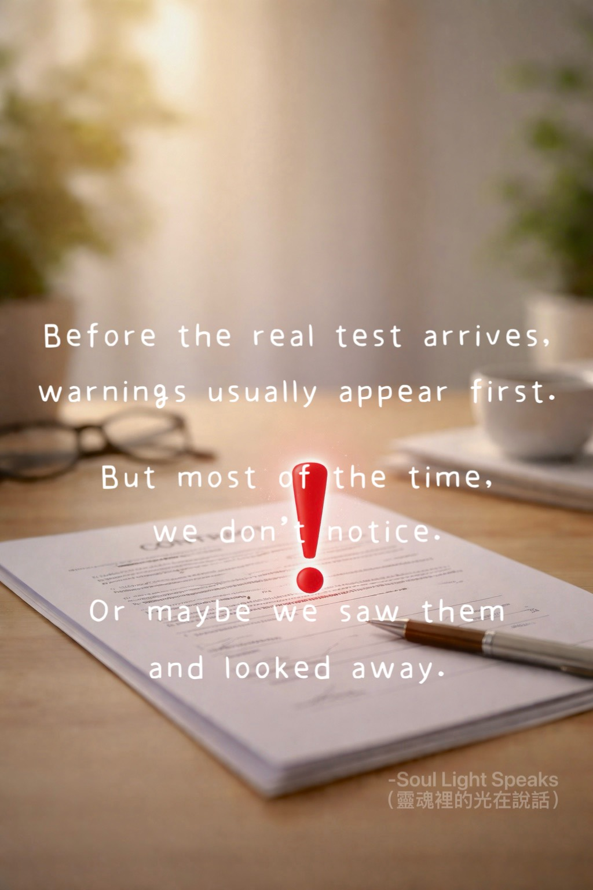

warnings usually appear first.
But most of the time,
we do not notice.
Or maybe we saw them
and looked away.
Before life brings
a real test,
it rarely comes
without warning.
There are signs—
quiet,
repeated,
easy to miss.
Before illness turns serious,
the body often whispers—
fatigue,
headaches,
small discomforts.
But we grow used to ignoring them,
until one day,
we finally look back
and understand.
Life’s lessons
follow the same pattern.
If your lesson
is about words,
agreements,
or responsibility,
life won’t begin
with something irreversible.
It starts small—
a misunderstanding,
a missed detail,
a harmless mistake.
Maybe that time,
someone close to you
lets it slide.
But that wasn’t luck.
It was practice.
A chance to slow down.
A chance to check again.
A chance to treat things with care.
Because the real test
comes later—
in places where
“sorry” isn’t enough.
What seemed small
was never random.
It was pointing
to the same thing all along.
A little more care,
a little more awareness—
and the storm
might never come.
If we don’t learn,
the lesson returns—
in a heavier form.
Life is not in a hurry
to punish.
It simply asks,
again and again—
“Are you listening?”
A reminder
is never a punishment.
It’s a choice—
whether we are willing
to understand.